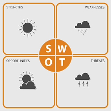

In this article you will be reading about the feedback I received on the SKC excercise and what is think about it.
When I went to Daphne to get my feedback on the assignment her first question was what my interests in computers were, ever since that was stated at the motivation for the study, this was a bit of a tougher question because it wasn't immediatly clear if she was talking about the software or the hardware.
Both of these could easily be answered, the hardware was a real starter, when i was younger I just to try and fix old hardware devices with my friend. But the software is also very interesting to me, this is there because of the games that I play and the option to install multiple mods on top of the game.
We both concluded that there has always been interest in computers, it was a good thing that I tried to make an app before I started to studies even though it didn't come any further then a white screen telling "hello world".
I was really happy with this feedback. It felt good to get a small confirmation that I chose something that really fits me
Next we talked about the SWOT analyse that I made here, first we talked about the strengts that I have. Comparing myself to others is a good thing, because usually there will be people that are better then I am. But Daphne also warned me that this could come out as a threat, because if I end up in a group that isn't motivated to go and work and grow that might end up demotivating me as well.
I didn't view this from that side, but I agree with Daphne that it is something that I need to be careful with.
The next part was about the weakness.
It won't be a big problem that I don't have any experience coding. But waiting with doing my work untill the last moment is dangerous because it might end up causing alot of stress and maybe even panic.
I definitely agree that it might end up being vert dangerous waiting to make my work, which I will try and avoid to do.
The oppotunities was an interesting topic, because every company needs ICT. The chances of joining an ICT company were I'm very new and all the other colleagues have way more experience then I do are pretty big.
Because of my strength this won't be a problem but a good thing, I will try and compare myself to the more exprerienced ones and try and improve to get on their level.
It is good that I already tried to include a solution to my threat. But this isn't guaranteed because this might not help. If this is the case I will need to try and figure out a new solution that does help for me.
At first the feedback that I got was scaring me a bit, but later I thought of a (hopefully) solution, which is trying to find something else to compare me to.
